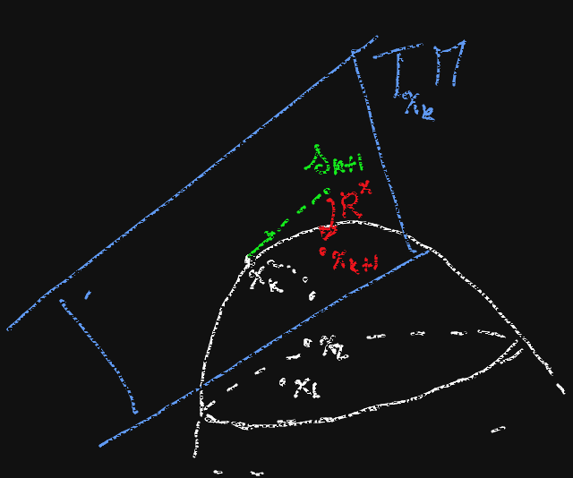

Recall that, if $\gamma:(-1,1)\to M$ is a geodesic in the Riemannian manifold $(M,g)$, with $\gamma(0)=p$, $\dot{\gamma}(0)=v$, then, for $q=\gamma(t)$, we have $$f(q)=f(p)+t\nabla f(v)+\frac{t^2}{2}\nabla^2f(v,v)+O(t^3)\;.$$
Recall that $\nabla f$ is, in fact, $df$. The Riemannian gradient is $\mathrm{grad} f$ such that $df(X)=g(\mathrm{grad} f, X)$ (i.e. $df^\sharp$ - index raised through $g^{ij}$, the inverse metric).
Likewise, $\nabla^2 f$ gives a symmetric $2$-form on $T_pM$ for each $p\in M$; using the metric, we can transform it in an endomorphism of $T_pM$: $\mathrm{Hess} f_p:T_pM\to T_pM$ such that $g(\mathrm{Hess} f_p[X], Y)=\nabla^2 f(X,Y)$. In local coordinates, $g^{ik}\nabla^2_{ij} f=(\mathrm{Hess} f_p)^k_j$.
In the same way, we defined $R^{l}_{ijk}$ and $R_{ijkl}=g_{lm}R^m_{ijk}$.
We would like to employ this expansion to obtain an analogue of the Newton algorithm on Riemannian manifolds.
A (second-order) retratcion is a smooth map $R:TM\to M$ such that
- $R(x,0)=x$ for all $x\in M$
- for every $x\in M$, let $R^x:T_xM\to M$ be given by $R^x(v)=R(x,v)$, then $DR^x_0[v]=v$ for all $v\in T_0(T_xM)=T_xM$.
- for every $x\in M$ and $v\in T_xM$, let $\gamma(t)=R^x(tv)$, then $(\nabla_{\dot{\gamma}}\dot{\gamma})_x=0$.
We note that property 1 holds true also for any first-order retraction if $x$ is a critical point.
Given $f:M\to\R$ and $x_k\in M$, we find $x_{k+1}$ (hopefully closer to a minimum of $f$), by writing an approximated version of $f$ on $T_{x_k}M$ and solving for its minimum. This makes sense only if the approximated version can be easily minimized. The functions $$\tilde{f}(s)=f(x_k)+g_{x_k}(s,\mathrm{grad} f_{x_k})+\frac{1}{2}g_{x_k}(\mathrm{Hess}f_{x_k}(s), s)$$ is quadratic, so it is easily minimized by $s$ such that $$\mathrm{Hess}f_{x_k}(s)=-\mathrm{grad}f_{x_k}\;.$$ The existence of a global minimum is guaranteed by the sign of the Hessian.
def RNA(retraction,x0,f):
x=[x0] # points
s=[] # displacement vector
k=0 # iteration counter
stop_cond=False
while stop_cond==False:
#we solve (somehow) the linear system Hess=-grad
soln=lin_solve(hess(f,x[k]),-grad(f,x[k]))
s.append(soln) #add the new vector
x.append(retraction(x[k],s[k])) # new point on M
stop_cond=check_exit(x, f, k) # checks if we made it!
k+=1
return (x[k], f(x[k]))
Conjugate gradients: a method from linear algebra to approximate the solution of $Ax=b$ by calculating the value of $Av$ for a finite number of vectors $v$ (at most $\dim T_pM$ iterations).
Riemannian trust-region method: instead of solving each time the approximate problem (if $\mathrm{Hess}f_{x_k}$ is not positive definite, the minimum does not exist, in general), we minimize $\tilde{f}(s)$ in a small ball around the origin, called the trust-region at step $k$. We the accept or reject the guess based on the ration between the real improvement and the approximation improvement, which influences also the radius of the trust-region at step $k+1$.
Hessian replacement: in the first steps of the algorithm, instead of the Hessian, we could use another operator (even non linear) which respects some estimates; when we get closer to the critical point, we need a second-order approximation, hence the Hessian.
We have a number of assumptions to make in order for the Riemannian trust-region method to converge.
In particular, we need Lipschitz-like estimates on $\mathrm{grad}f$ and on $\mathrm{Hess}(f\circ R^x)$; depending on the retraction chosen, the second term involves curvature parts, namely it usually depends on the sectional curvature of the manifold (and on the second derivatives of $f$, obviously!).
A curve in the plane can be parametrized with $c_0\in\R^2$, $r\in\R$, $e,g:[0,1]\to\R$ by defining $$\gamma(t)=c_0+\frac{e^r}{2}\int_0^t(e+ig)^2d\tau\;,$$
upon identifying $\R^2$ with $\mathbb{C}$. If we impose that $\gamma$ is a closed curve and of length $e^r$, we obtain that $$\int_0^1e^2d\tau=\int_0^1g^2d\tau=1\qquad\int_0^1egd\tau=0\;.$$
They form an orthonormal pair in the space of $L^2$ functions; on the set of such pairs we can define a Riemannian metric, inspired by the one on the pairs of orthonormal vectors.
An interesting feature of this metric is that there is a closed form for the exponential map.
Let $u:[0,1]^2\to\R$ be a grayscale image. Given a losed curve $\gamma$ and two gray values $u_1$, $u_2$, we consider the functional $$f(\gamma)=a_1\int_{\mathrm{int}\gamma}(u_1-u)^2 dxdy + a_1\int_{\mathrm{ext}\gamma}(u_2-u)^2dxdy+a_2\rho(\gamma)\;.$$ where $\rho$ is a regularization term.
This functional is minimized when $\gamma$ borders a region of mean color $u_1$ and leaves out a region of mean color $u_2$, with small variance.
Minimizing $f$ means to perform an image segmentation in parts of given color.